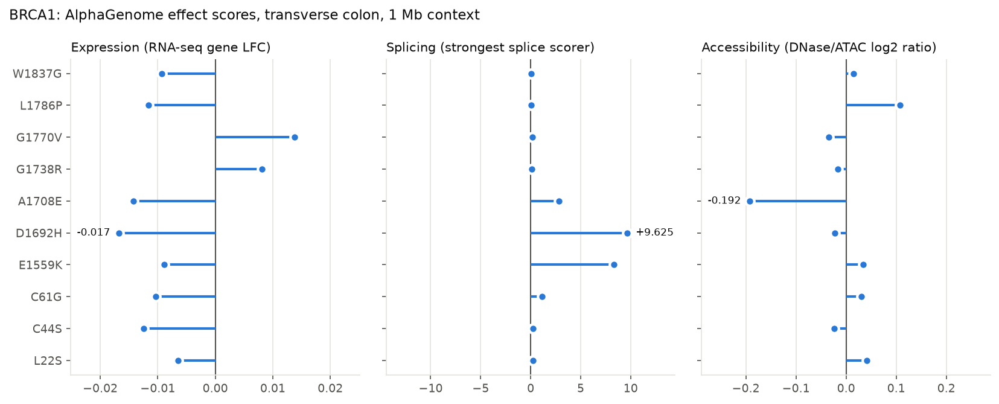

From a genetic variant to its predicted regulatory effect and the 3D
protein it hits. Start from a variant, a VCF or just a gene name.
1 · ClinVarknown pathogenic variants for a gene
2 · Ensembl VEPgene, consequence, residue, gnomAD
3 · AlphaGenomepredicted effect on expression,
splicing, chromatin
4 · AlphaFold DB3D model and confidence at the
mutated residue
Case studies

BRCA1: pathogenic missense variants from ClinVar
Ten expert-panel pathogenic missense variants, most in the folded RING and BRCT domains. Two of them, D1692H and E1559K, get AlphaGenome splicing scores about 40× the median. Both sit on the last base of an exon, and VEP independently flags exactly these two as splice-region variants: damage that may come from mis-splicing as well as from the amino-acid change.
Seven cancer hotspots and the common P72R polymorphism. Every hotspot sits in the folded DNA-binding domain (residue pLDDT 95–99), which fits a structural mechanism. Predicted regulatory effects are small, with one splicing outlier (Y220C) worth testing.
Research use only, not for clinical decision-making. These pages were
generated on 2026-11-15. ClinVar, Ensembl, AlphaFold DB and AlphaGenome
change over time; each case lists the exact versions in its provenance.json
and in the panel at the bottom of its 3D viewer.
AlphaGenome. Predictions from AlphaGenome (Google DeepMind), API used under the AlphaGenome Terms of Service (https://alphagenome.google/terms): outputs are for non-commercial research use only, not for clinical decision-making, and not for training other models. Avsec et al., Nature 649, 1206-1218 (2026).
AlphaFold DB. Structures from the AlphaFold Protein Structure Database (EMBL-EBI), CC-BY-4.0. Jumper et al., Nature 2021; Varadi et al., Nucleic Acids Res. 2024.
ClinVar. Variant classifications from ClinVar (NCBI). Landrum et al., Nucleic Acids Res.
Ensembl. Annotation from Ensembl VEP and REST. Martin et al., Nucleic Acids Res. 2023.
UniProt. Protein domains from UniProtKB, CC-BY-4.0.